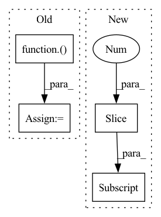

Pattern ID :1682

Before Change
zero = shard(jnp.zeros_like(src))
src = (ctx.parameters, src, zero, src, zero)
for i in range(ctx.model.depth):
src = reversible(ctx, spatial_mixing, (i + 1) == ctx.model.depth)(src)
src = reversible(ctx, feed_forward, (i + 1) == ctx.model.depth)(src)
src = src[1] + src[3]
return contrastive_output_embed(ctx, src) if ctx.training.contrastive else output_embed(ctx, src)
After Change
zero = shard(jnp.zeros_like(src))
src = (ctx.parameters, src, zero, src, zero)
src = lax.scan(step(ctx), (src, jnp.zeros([])), None, ctx.dims.sizes.depth, unroll=ctx.model.scan_unroll)
return output_embed(ctx, revnet_out(src[0][1:]))
def compute(params: typing.Dict[str, jnp.ndarray], inp: jnp.ndarray) -> typing.Tuple[jnp.ndarray, jnp.ndarray]:
In pattern: SUPERPATTERN
Frequency: 3
Non-data size: 4
Instances
Fragment ID: 7801698
Project Name: homebrewnlp/homebrewnlp-jax
Commit Name: 7ed6886625803952b38a63e565e4d05fa04a4f7d
Time: 2021-09-12
Author: 39779310+ClashLuke@users.noreply.github.com
File Name: src/model.py
M Class Name: AnonimousClass
N Class Name: AnonimousClass
M Method Name: body_ctx(2)
N Method Name: body_ctx(2)
M Parent Class:
N Parent Class:
M File Name: src/model.py
N File Name: src/model.py
M Start Line: 263
M End Line: 268
N Start Line: 263
N End Line: 265
'>
Before Change
src = input_embed(ctx, src)
zero = jnp.zeros_like(src)
src = (src, zero, src, zero)
if ctx.is_initializing:
ctx.add_depth = True
ctx.parameters = step(ctx)(src, ({}, 0))
ctx.add_depth = False
else:
params = {p: k for p, k in ctx.parameters.items() if is_stacked(ctx, p, k)}
src, _ = lax.scan(step(ctx), src, (params, jnp.arange(ctx.dims.depth)), ctx.dims.depth)
After Change
src = reversible(ctx, pointwise_block, src)
if i % ctx.model.qrnn_frequency == (ctx.model.qrnn_frequency // 2 - 1):
src = reversible(ctx, qrnn_block, src)
out = revnet_out(src[1:])
out = scale_norm_act(ctx, out, ctx.dims.features, act=False)
wgt = get_param(ctx, "out_embd", [ctx.dims.features, ctx.dims.vocab], std=1,
lr_scale=ctx.optimizer.output_scale, scale=1 / ctx.dims.heads)
'>
Fragment ID: 7801697
Project Name: homebrewnlp/homebrewnlp-jax
Commit Name: d3689ac1065990625b4a0205242bc2e6016a6a00
Time: 2022-08-28
Author: 39779310+ClashLuke@users.noreply.github.com
File Name: src/model/main.py
M Class Name: AnonimousClass
N Class Name: AnonimousClass
M Method Name: body_ctx(2)
N Method Name: body_ctx(2)
M Parent Class:
N Parent Class:
M File Name: src/model/main.py
N File Name: src/model/main.py
M Start Line: 56
M End Line: 64
N Start Line: 29
N End Line: 36
'>
Before Change
src = input_embed(ctx, src)
zero = shard(jnp.zeros_like(src))
src = (ctx.parameters, src, zero, src, zero)
for i in range(ctx.model.depth):
src = reversible(ctx, spatial_mixing, (i + 1) == ctx.model.depth)(src)
src = reversible(ctx, feed_forward, (i + 1) == ctx.model.depth)(src)
src = src[1] + src[3]
return contrastive_output_embed(ctx, src) if ctx.training.contrastive else output_embed(ctx, src)
After Change
zero = shard(jnp.zeros_like(src))
src = (ctx.parameters, src, zero, src, zero)
src = lax.scan(step(ctx), (src, jnp.zeros([])), None, ctx.dims.sizes.depth, unroll=ctx.model.scan_unroll)
return output_embed(ctx, revnet_out(src[0][1:]))
def compute(params: typing.Dict[str, jnp.ndarray], inp: jnp.ndarray) -> typing.Tuple[jnp.ndarray, jnp.ndarray]:
'>
Fragment ID: 7801696
Project Name: homebrewnlp/olmax
Commit Name: 7ed6886625803952b38a63e565e4d05fa04a4f7d
Time: 2021-09-12
Author: 39779310+ClashLuke@users.noreply.github.com
File Name: src/model.py
M Class Name: AnonimousClass
N Class Name: AnonimousClass
M Method Name: body_ctx(2)
N Method Name: body_ctx(2)
M Parent Class:
N Parent Class:
M File Name: src/model.py
N File Name: src/model.py
M Start Line: 263
M End Line: 268
N Start Line: 263
N End Line: 265